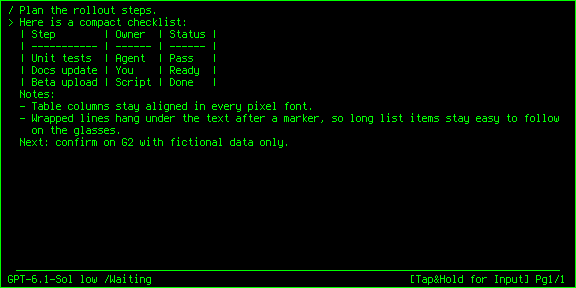
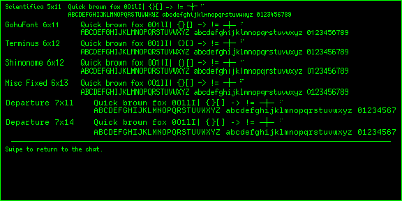
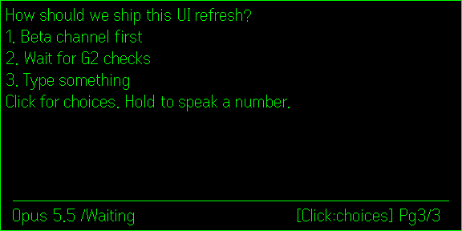
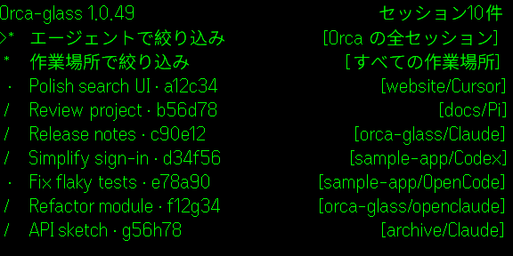
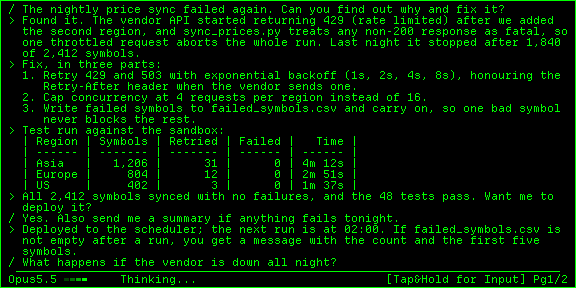
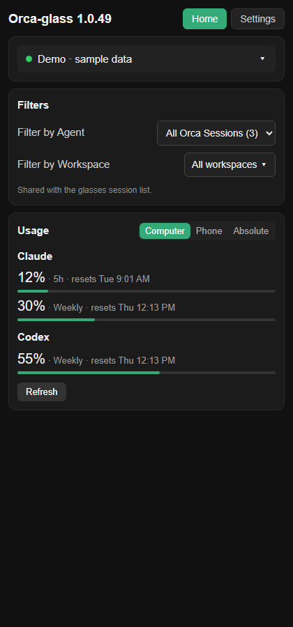

Read your Orca and Hermes sessions. Speak your next step.
Twelve native simulator captures (beta 1.0.49 renderer) using fictional data, plus one phone-page capture. Each upload PNG is 576 × 288 pixels, composited onto black. No real conversations, credentials, usage or microphone audio appear.
Current description · Listing statusPublic 1.0.36 is live. These screenshots are for the next listing refresh and are uploaded manually. The corrected privacy PDF is still separate from the portal attachment.






Read your Orca and Hermes sessions. Speak your next step. Orca Glass connects Even Realities G2 glasses to agents running in Orca on your Windows or macOS PC, and to Hermes Agent. Read conversations, see working or waiting status with the model name, filter by agent and workspace, and review spoken replies before sending. Since public 1.0.36 (beta 1.0.49): - Agents: Claude, Codex, Cursor, OpenCode, Pi, OpenClaude and Hermes Agent (bots, sessions and scheduled jobs). Answer single-select Hermes clarify questions from the glasses when the gateway still shows that prompt. - Reader: book-style pages open at the start of the latest reply. Swipe for pages; swipe down on the last page to refresh. Hanging indents on wrapped lines. Markdown tables line up in small-text mode. Pixel fonts: Scientifica, GohuFont, Terminus, Shinonome, Misc Fixed, Departure 7x11 and 7x14, plus Native text and a Compare fonts screen. Scanner-sweep thinking indicator in tile mode (native keeps Braille). - Filter by Agent and Filter by Workspace on the glasses and the phone companion. Usage for Codex, Claude and Cursor; reset times in Computer, Phone or Absolute mode. - Voice: hold to open a full-screen voice page; local Whisper on your PC with silence detection. Release to review, click to send, double-click to cancel. - English and Japanese (switch in the phone app). Shinonome supports Japanese in small-text mode. - macOS bridge setup and automated smoke tests are new; pairing on a real Mac is not yet verified. Requires G2, the Even Realities Android app, Orca and the companion bridge. The packaged connection targets a configured private PC over Tailscale; arbitrary-PC self-service setup is not offered yet. Agents run on your PC, not the glasses. Try the demo without a PC. Source/setup: https://github.com/eugene8080/orca-glass/tree/windows-android-codex Independent Windows/Android fork of 2ero20ne's Orca Glass under MIT. Original: https://github.com/2ero20ne/orca-glass